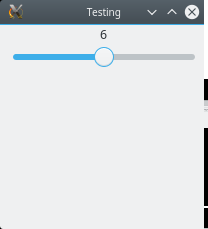
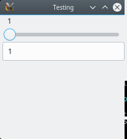

A first example: GUI controls
Let's create a slider object:
julia> using Gtk4, GtkObservables
julia> sl = slider(1:11)
GtkScaleLeaf with Observable(6)
julia> typeof(sl)
GtkObservables.Slider{Int64}A GtkObservables.Slider holds two important objects: an Observable (encoding the "state" of the widget) and a GtkWidget (which controls the on-screen display). We can extract both of these components:
julia> observable(sl)
Observable(6)
julia> typeof(widget(sl))
GtkScaleLeaf(If you omitted the typeof, you'd instead see a long display that encodes the settings of the GtkScaleLeaf widget.)
At present, this slider is not affiliated with any window. Let's create one and add the slider to the window. We'll put it inside a Box so that we can later add more things to this GUI (this illustrates usage of some of Gtk's layout tools:
julia> win = GtkWindow("Testing"); win[] = bx = GtkBox(:v); # a window containing a vertical Box for layout
julia> push!(bx, sl); # put the slider in the box, shorthand for push!(bx, widget(sl))You should now see a window with your slider in it:

The value should be 6, set to the median of the range 1:11 that we used to create sl. Now drag the slider all the way to the right, and then see what happened to sl:
julia> sl
GtkScaleLeaf with Observable(11)You can see that dragging the slider caused the value of the observable to update. Let's do the converse, and set the value of the slider programmatically:
julia> sl[] = 1 # shorthand for observable(sl)[] = 1
1Now if you check the window, you'll see that the slider is at 1.
Realistic GUIs may have many different widgets. Let's add a second way to adjust the value of that observable, by allowing the user to type a value into a textbox:
julia> tb = textbox(Int; observable=observable(sl))
GtkEntryLeaf with Observable{Int64} with 2 listeners. Value:
1
julia> push!(bx, tb);
Here we created the textbox in a way that shared the observable of sl with the textbox; consequently, the textbox updates when you move the slider, and the slider moves when you enter a new value into the textbox. Setting the value of observable(sl) updates both.
Another example of connecting a widget with a observable is using a button to allow updates to propagate to a second Observable:
a = button("a")
x = Observable(1)
y_temp = map(sin, x) # see the Observables.jl documentation for info about using `map`
y = map(_ -> y_temp[], a)Setting x will update y_temp, but not y. Only after the user presses on the a button does y get updated with the last value of y_temp.